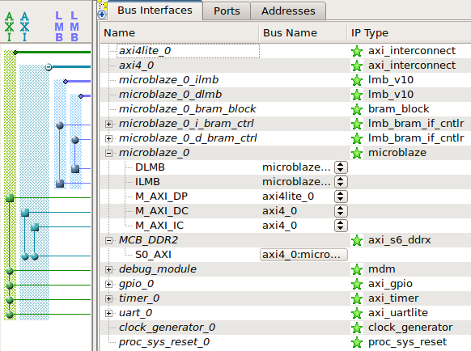
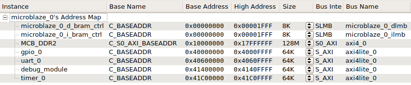
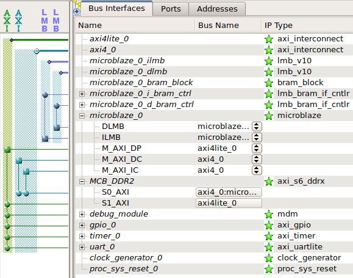
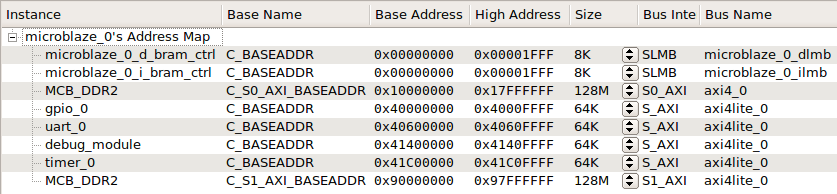
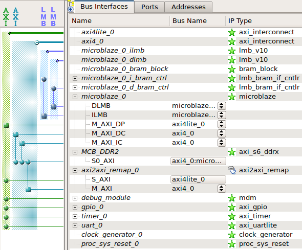
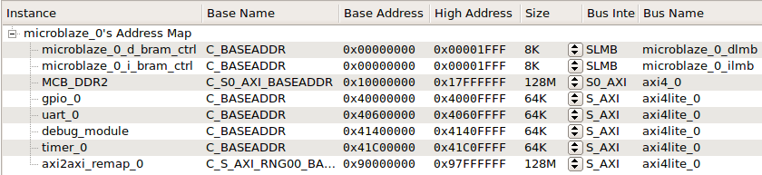

The VectorBlox MXP is packaged for easy integration with Xilinx Platform Studio (XPS) and the Xilinx Embedded Development Kit (EDK).
Before you begin, make sure you have:
Xilinx ISE Design Suite 14.7 or later. Make sure that you install an edition that includes Xilinx Platform Studio (XPS) and the Embedded Development Kit (EDK). (As of this writing, XPS and the EDK are automatically installed with ISE WebPACK, ISE Embedded Edition, and ISE System Edition.)
A license for Xilinx Platform Studio (XPS). An XPS license is included with licenses for the Embedded and System Editions of ISE, but not with licenses for the WebPACK, Logic, and DSP Editions. Xilinx sells a separate XPS license for use with these products. Xilinx also offers a 30-day evaluation license for all of their design tools; visit http://www.xilinx.com/getlicense.
One of the development boards for which we provide pre-built bitstreams, if you wish to follow the examples in this document. Currently we provide pre-built systems for the Digilent Atlys and Avnet ZedBoard kits.
A VectorBlox MXP release, provided as a zip or tar.gz file.
Download and install Xilinx ISE Design Suite according to Xilinx’s instructions.
http://www.xilinx.com/support/download/index.htm
Note the pathname where the tools are installed. For example, under Windows, the default installation location for version 14.7 is C:\Xilinx\14.7\ISE_DS. The settings32.bat and settings64.bat batch scripts in this directory define the XILINX and XILINX_EDK environment variables which point to the ISE and EDK installation directories. Unix installations contain Bourne shell and C shell scripts (settings{32,64}.{sh,csh}) that define these variables.
Extract the VectorBlox zip or tar.gz file.
The pcores, drivers, and sw_services directories need to be copied to a location where the EDK tools can find them. You can choose one of the following options:
Perform the following:
$XILINX_EDK/hw/VectorBlox and $XILINX_EDK/sw/VectorBlox.$XILINX_EDK/hw/VectorBlox$XILINX_EDK/sw/VectorBlox.In XPS, VectorBlox cores will appear in the IP Catalog under the EDK Install section. The Xilinx SDK will be able to automatically find the VectorBlox drivers and sw_services directories.
Copy the pcores, drivers, and sw_services directories to the root directory of your XPS project (i.e. the directory where your XMP and MHS files reside). In XPS, VectorBlox cores will appear in the IP Catalog under Project Local PCores. However, in order for the Xilinx SDK to be able to find the VectorBlox drivers and sw_services directories, the XPS project directory will need to be manually added to the XSDK search path, either with the XSDK -lp <path> command-line option, or from the XSDK GUI (Xilinx Tools → Repositories → Local Repositories → New…).
Create a directory called VectorBlox in a location of your choosing. Copy the pcores, drivers, and sw_services directories to the VectorBlox directory. Add the parent of the VectorBlox directory to the XPS project search path (Project → Project Options… → Advanced Options → Project Peripheral Repository Search Path). Alternatively, you can add a ModuleSearchPath line to the XPS XMP project file, e.g.
ModuleSearchPath: /path/to/peripheral/repositoryVectorBlox cores will appear in the IP Catalog under Project Peripheral Repository0. The VectorBlox directory will need to be manually added to the Xilinx SDK search path as described in the previous paragraph.
If you wish to use the pre-built bitstreams we provide for the Digilent Atlys or Avnet ZedBoard, you should also perform the following steps:
Install the Digilent plugin. This is a plugin for the Xilinx tools which adds support for the USB-JTAG configuration hardware used on Digilent boards. The plugin might have already been installed when you installed ISE, but if not, you can find the installation program in $XILINX/bin/nt/digilent and $XILINX/bin/nt64/digilent on Windows, or in $XILINX/bin/lin/digilent and $XILINX/bin/lin64/digilent on Linux.
To test that the plugin is correctly installed:
Power on the Atlys or ZedBoard.
Connect a USB cable between the board’s “PROG” micro-USB port and your computer.
Open a command-line window. (On Windows, select Start Menu → All Programs → Xilinx Design Tools → ISE Design Suite → Accessories → ISE Design Suite 32/64 Bit Command Prompt; on Linux, open a shell and source the appropriate settings{32,64}.{sh,csh} script.)
Run impact -batch.
At the iMPACT prompt, enter the commands
setmode -bs
setcable -p auto
identify -inferirIf everything is installed correctly, you should see output similar to the following for the Atlys:
INFO:iMPACT - Digilent Plugin: Plugin Version: 2.4.4
INFO:iMPACT - Digilent Plugin: found 1 device(s).
INFO:iMPACT - Digilent Plugin: opening device: "Atlys", SN:210178409043
INFO:iMPACT - Digilent Plugin: User Name: Atlys
INFO:iMPACT - Digilent Plugin: Product Name: Atlys
INFO:iMPACT - Digilent Plugin: Serial Number: 210178409043
INFO:iMPACT - Digilent Plugin: Product ID: 00C0010C
INFO:iMPACT - Digilent Plugin: Firmware Version: 0305
INFO:iMPACT - Digilent Plugin: JTAG Port Number: 0
INFO:iMPACT - Digilent Plugin: JTAG Clock Frequency: 1600000 Hz
Identifying chain contents...'0': : Manufacturer's ID = Xilinx xc6slx45,
Version : 4
INFO:iMPACT:1777 -
Reading /xilinx/14.7/ISE_DS/ISE/spartan6/data/xc6slx45.bsd...
INFO:iMPACT:501 - '1': Added Device xc6slx45 successfully.For the ZedBoard, the output should look like:
INFO:iMPACT - Digilent Plugin: Plugin Version: 2.4.4
INFO:iMPACT - Digilent Plugin: found 1 device(s).
INFO:iMPACT - Digilent Plugin: opening device: "Zed", SN:210248447698
INFO:iMPACT - Digilent Plugin: User Name: Zed
INFO:iMPACT - Digilent Plugin: Product Name: Digilent Zed
INFO:iMPACT - Digilent Plugin: Serial Number: 210248447698
INFO:iMPACT - Digilent Plugin: Product ID: 00E00153
INFO:iMPACT - Digilent Plugin: Firmware Version: 0105
INFO:iMPACT - Digilent Plugin: JTAG Port Number: 0
INFO:iMPACT - Digilent Plugin: JTAG Clock Frequency: 10000000 Hz
Identifying chain contents...'0': : Manufacturer's ID = Xilinx xc7z020,
Version : 0
INFO:iMPACT:1777 -
Reading /xilinx/14.7/ISE_DS/ISE/zynq/data/xc7z020.bsd...
INFO:iMPACT - Using CseAdapterBSDevice
INFO:iMPACT:501 - '1': Added Device xc7z020 successfully.For the Atlys, you might need to install a driver for the EXAR XR21V1410 USB UART. Linux and Windows drivers can be downloaded from http://www.exar.com/connectivity/uart-and-bridging-solutions/usb-uarts/xr21v1410. (Windows 7 should automatically find and install the driver.)
For the ZedBoard, you might need to install a driver for the Cypress CY7C64225 USB UART. Instructions for installing the Windows driver are available on [zedboard.org] under Support → Documentation → Cypress USB-to-UART Setup Guide, but most versions of Windows should automatically find and install the driver. Popular Linux distributions should already include support for the Cypress USB UART with the USB cdc_acm kernel module (the device should appear as /dev/ttyACM*).
Install a serial port terminal emulation program (e.g. PuTTY on Windows, picocom on Linux) to display output from the board’s USB UART.
This section describes how to instantiate the VectorBlox MXP processor into a MicroBlaze- or Zynq-based Xilinx Platform Studio project. Some familiarity with XPS is assumed; please refer to Xilinx’s XPS and EDK documentation for further details. (EDK Concepts, Tools, and Techniques (UG683) is a good place to start.)
You must ensure that the VectorBlox MXP design files are in the XPS IP Search Path; please see the Installation section for details.
The figure below shows the XPS view of a simple MicroBlaze-based embedded system. The system includes some on-chip RAM connected to LMB buses, a DDR2 DRAM controller connected to an AXI4 interconnect, and some peripherals connected to an AXI4-Lite interconnect. We will show how to add an MXP processor to this system.
 
The MXP is little-endian, so the MicroBlaze must be configured to be little-endian as well (C_ENDIANNESS = 1). (This is the default setting for a MicroBlaze processor with AXI4 interfaces.)
We recommend that you enable the MicroBlaze’s Instruction Cache, Data Cache, and Branch Target Cache, as these will significantly improve performance. The figure below shows the MicroBlaze’s cache configuration panel. The cacheable address range is also defined in this panel and typically includes the DRAM address range.
The MXP connects to the MicroBlaze via a Direct FSL (Fast Simplex Link) interface, so you must set the number of FSL links to at least 1 (C_USE_FSL_LINKS = 1). In the MicroBlaze advanced core configuration dialog box, select the Buses tab, set Number of Stream Links to 1 or more, and set Select Stream Interfaces to FSL.
Note that MXP software driver assumes that the MXP processor is connected to FSL0 (DRFSL0/DWFSL0). If you need to use FSL0 for another purpose, please contact VectorBlox for a modified version of the MXP driver.
The Zynq PS S_AXI_HPx port (High Performance AXI Slave Port) that the MXP's DMA engine connects to should be configured to be as wide as possible (64-bits wide for vector widths greater than one).
Avoid using bus masters that perform narrow transfers (i.e. transfers whose size, as specified by AxSIZE[2:0], is smaller than the data bus width).
If a bus master advertises that it uses narrow bursts (C_M_AXI_SUPPORTS_NARROW_BURST = 1 in its MPD file), XPS will by default automatically enable narrow burst support in all AXI4 slaves connected to that bus master. Narrow burst support does not only increase area, but can also affect performance. The maximum achievable throughput of some memory controllers can be significantly degraded when narrow burst support is enabled; the Spartan-6 AXI DDR Controller (axi_s6_ddrx) is one known example.
The VBX API library provides some functions to simplify sharing of data between the host CPU (MicroBlaze or ARM Cortex-A9) and the MXP without requiring the application programmer to explicitly flush data cache lines. These functions include vbx_shared_malloc(), vbx_shared_free(), vbx_remap_uncached(), and vbx_remap_cached().
The library assumes that the host CPU can access a cached memory region in an uncached manner (i.e. bypassing the data cache) simply by setting the most significant bit of the physical address to 1.
Unfortunately MicroBlaze does not have built-in support for bypassing the data cache (other than disabling the entire data cache), but we can add equivalent functionality by adding some bus connections and placing some restrictions on the system’s address map:
The MicroBlaze’s cached memory region must be contained within the range 0x0 to 0x7fff_ffff.
Any memory peripherals that are to be shared between MicroBlaze and MXP must be accessible in the range 0x0 to 0x7fff_ffff and at a mirror image location (differing only in the MSB of the address) in the range 0x8000_0000 to 0xffff_ffff.
In terms of bus connectivity, each shared memory peripheral must be reachable from both the MicroBlaze’s M_AXI_DC data cache interface and its M_AXI_DP data peripheral interface. A data access to an address in the cached memory range will go over the M_AXI_DC bus (if there is a cache miss), but by setting the MSB of the address to 1, the access will bypass the cache and use the M_AXI_DP bus.
There are two ways to achieve this additional connectivity:
Add an additional AXI slave port to each shared memory peripheral. Connect one port to the MicroBlaze’s M_AXI_DC interface (and map it to a cached address range), and connect the other port to the M_AXI_DP interface (and map it to an uncached address range that differs from the first port’s address range by just the MSB). Xilinx’s DRAM controllers typically support multiple AXI slave ports.
Connect the M_AXI_DP bus to the M_AXI_DC bus with an AXI-to-AXI connector that also remaps addresses. VectorBlox provides an axi2axi_remap component for this purpose. (It is included in the pcores directory, and can be found in the XPS IP Catalog in the Bus & Bridge category.) Connect the component’s AXI slave port to the M_AXI_DP bus, and connect its master port to the M_AXI_DC bus. Map the connector’s slave port to an address range above 0x8000_0000, large enough to span the uncached address ranges of all shared memory peripherals. Accesses over the M_AXI_DP bus that fall within the connector’s address range are passed through to the M_AXI_DC bus, but with the MSB of the address set to 0, thus allowing uncached access to memory on the M_AXI_DC bus.
The advantage of this method is that it doesn’t require an additional AXI slave port to be added to existing memory peripherals.
The figure below shows a MicroBlaze system with a two-port DRAM controller, with the first port mapped to the range 0x1000_0000 to 0x17ff_ffff and the second port mapped to the range 0x9000_0000 to 0x97ff_ffff.
 
The figure below shows a system that uses an axi2axi_remap component to allow uncached access to the DRAM controller over the M_AXI_DP bus, in the address range 0x9000_0000 to 0x97ff_ffff.
 
On the ARM Cortex-A9, the translation table in the CPU's Memory Management Unit (MMU) can be used to alias the physical address range of a shared memory to two logical address ranges that differ only in address bit 31. The memory attributes of the lower address range are set to "normal cacheable", whereas the attributes of the upper address range are set to "strongly-ordered" to make the region non-cacheable. (Setting the memory attributes of the upper range to "normal non-cacheable" does not seem to have the desired effect.)
The MXP Programming Guide gives an example of how to do this.
The figure below shows the VectorBlox MXP core in the XPS IP Catalog.
To add a VectorBlox MXP instance to your system, double-click on VectorBlox MXP. XPS will open the parameter editor shown below. (Note: if you received a pre-synthesized netlist for the MXP core, you will not be able to change any of the parameters.)
The parameters are described below:
The number of 32-bit vector lanes. This must be a power of 2.
The data bus width of the MXP DMA Engine’s AXI master interface expressed in terms of 32-bit lanes. The number of memory lanes must be a power of two and no larger than the number of vector lanes.
The maximum number of beats per burst issued by the DMA Engine’s AXI master interface. (A beat is a clock cycle in which data is transferred between a source and sink interface.)
The Scratchpad RAM size in kilobytes.
Sets the minimum multiplier size. This can be used to reduce FPGA multiplier resource utilization at the cost of performance. If set to Byte, then byte, halfword, and word multipliers are instantiated and multiplication of any element size runs at full speed. If set to Halfword, only word and halfword multipliers are instantiated; byte-width multiplication will be executed with the halfword multiplier and run at half speed. If set to Word, only word multipliers are instantiated; halfword-width multiplication will run at half speed and byte-width multiplication will run at quarter speed.
These parameters affect the fixed-point multiply operation. They specify the number of least-significant bits that will be used to represent the fractional part of 32-bit, 16-bit, and 8-bit fixed-point numbers.
The fixed-point formats are also displayed in Q notation, where the first number specifies the number of integer bits and the second number specifies the number of fractional bits.
The core configuration dialog box also displays a couple of derived parameters:
The data bus width, in bits, of the DMA Engine’s AXI master interface. This is derived from the number of memory lanes.
The AXI master interface’s maximum burst size in bytes, as determined by the memory bus width and the maximum number of beats per burst.
This section describes the MXP processor’s interfaces:
This is the main MXP clock, as well as the AXI clock. The MXP’s AXI Master and Slave interfaces run synchronously to core_clk.
This clock must be double the frequency of the AXI clock core_clk and must be synchronous to core_clk. It should be generated from the same PLL that provides core_clk.
This is the active low reset input. Assertion and deassertion must be synchronous to the AXI clock core_clk and core_clk_2x.
The M_AXI master interface is the MXP DMA Engine’s interface to external memory. The data bus width is determined by the number of memory lanes selected in the MXP Parameter Editor.
The S_AXI slave interface allows the MicroBlaze or ARM CPU to access the MXP’s scratchpad memory. It is typically connected to either the MicroBlaze’s M_AXI_DP bus or Zynq PS's M_AXI_GP1 port. The slave data bus is 32-bits wide.
The MicroBlaze provides instructions to the MXP over a low-latency Direct FSL interface. The MXP’s FSL_SINK and FSL_SRC interfaces must be connected to the MicroBlaze’s DWFSL0 and DRFSL0 interfaces, respectively.
The S_AXI_INSTR slave interface is used to receive instructions from the Zynq PS. It should be connected to the Zynq PS's M_AXI_GP0 interface.
The figure below shows the XPS bus connections between MicroBlaze and MXP in a system with a two-port DDR2 DRAM controller.
The next figure shows the XPS bus connections between the Zynq Processing System and MXP in a system where the ARM Cortex-A9 and MXP share data via the the Zynq's hard DDR controller.
After connecting the MXP interfaces in the Bus Interfaces tab, some ports will need to be connected in the Ports tab. To view these ports, you can use Port Filters, as shown below (check Unconnected and uncheck Connected).
This must be connected to a clock that is synchronous to and twice the frequency of core_clk.
This must be connected to the same port that provides core_clk.
Once all of the components in your system are connected correctly, you can proceed to netlist generation by selecting Hardware → Generate Netlist.
Netlist generation runs the Platgen program, which calls XST to synthesize each IP component as well as the top-level wrapper that connects all the IP components in the system.
Alternatively, you can directly generate the FPGA bitstream in XPS by selecting Hardware → Generate Bitstream. This will first generate the netlist and then run the Xilinx implementation tools (e.g. NGDBuild, MAP, PAR, TRACE, BitGen) to generate a bitstream.
This section describes how to download one of the provided pre-built FPGA bitstreams to a supported development board and how to compile and run a test program on it.
If you have downloaded the VectorBlox MXP preview release from github, the string TOPDIR below refers to the top-level directory from the extracted download.
If you have a VectorBlox MXP hardware IP release, the string TOPDIR refers to the examples subdirectory of the extracted release.
Before you begin, make sure you have:
Installed Xilinx ISE 14.7 or later.
Installed and tested the Digilent USB-JTAG drivers.
A supported development board/kit. See the contents of TOPDIR/boards/
Connected your development board to your computer via USB cable and turned the board on.
Start a Command Shell.
In Windows, select Start Menu → All Programs → Xilinx Design Tools → ISE Design Suite → Accessories → ISE Design Suite 32/64 Bit Command Prompt.
In Linux, open a terminal and run the appropriate settings{32,64}.{sh,csh} script in the root of your Xilinx ISE_DS installation. (Select 32 or 64 depending on whether you want to use the 32-bit or 64-bit versions of the tools, and select sh or csh depending on whether you are using a Bourne-style shell, such as sh or bash, or a C Shell, such as csh or tcsh.) This sets up the proper environment variables for using the Xilinx development tools.
Navigate to one of the prebuilt VectorBlox MXP systems for your development board, located in TOPDIR/boards/<board_name>/prebuilt_*.
For example, for the ZedBoard, change directory to TOPDIR/boards/zedboard_arm/prebuilt_zedboard_arm_v16 for a 16-lane MXP system.
Store the path to the directory in a shell variable. In Linux, assuming you are using a Bourne-style shell such as sh or bash, use
PROJ_ROOT=`pwd`If using csh or tcsh, use
set PROJ_ROOT=`pwd`In Windows, use
set PROJ_ROOT=%cd%Navigate to a test application such as vbw_vec_add_t, located in TOPDIR/software/bmark/vbw_vec_add_t.
Make the executable.
To compile the program for the FPGA bitstream you previously selected, you need to pass the location of the BSP to make. Assuming the PROJ_ROOT shell variable has been set appropriately, on Linux, run
make clean_all all PROJ_ROOT=$PROJ_ROOTOn Windows, run
make clean_all all PROJ_ROOT=%PROJ_ROOT%After a long list of messages and a few seconds, the file test.elf should have been created.
Note that we used the clean_all target first to ensure that any libraries that might have been compiled against a different BSP in the past were cleaned and re-compiled. If you know that the libraries were already compiled for the selected BSP, you can omit the clean_all target.
Program the FPGA.
We provide a make target to program the FPGA with XMD or iMPACT. In Linux, use
make pgm PROJ_ROOT=$PROJ_ROOTIn Windows, use
make pgm PROJ_ROOT=%PROJ_ROOT%Open a serial port terminal emulator to prepare to view the output from the board’s USB-UART. On Linux, you can, for example, open a new terminal and run picocom -b 38400 /dev/ttyUSB0 for the Atlys or picocom -b 115200 /dev/ttyACM0 for the ZedBoard. On Windows, use a program such as PuTTY to connect to the USB serial port.
Download the executable.
We provide a make target to download the ELF with XMD. In Linux, use
make run PROJ_ROOT=$PROJ_ROOTIn Windows, use
make run PROJ_ROOT=%PROJ_ROOT%We have written a demonstration program that runs on supported boards with video output capability. It provides a visual demonstration of the acceleration capabilities of the MXP processor by allowing the user to see the performance difference between algorithms running on the scalar host CPU alone and vectorized MXP implementations of the same algorithms.
On systems with video output, the algorithms demonstrated are
A two-dimensional n-body particle repulsion simulation with 512 particles and an external force that varies according to a Lissajous pattern. Q16.16 fixed-point arithmetic is used. The MXP implementation of the algorithm uses a custom instruction pipeline that computes the sum of the forces from all other particles on a given particle. The pipeline is described in the following conference paper: A. Severance, J. Edwards, H. Omidian, G. Lemieux, "Soft Vector Processors with Streaming Pipelines," to appear at International Symposium on Field-Programmable Gate Arrays (FPGA), February, 2014 (http://www.ece.ubc.ca/~lemieux/publications/bytopic.html). The MXP implementation also makes use of a custom instruction for fixed-point division, if available.
Mandelbrot set calculation at different zoom levels.
Sobel edge detection run on half of the screen after each frame of the n-body particle simulation.
On systems that also have video input, some additional algorithms are demonstrated:
Sobel edge detection on the video input.
Motion estimation (motion tracking) on the video input. Two boxes track motion in the input video using a sum-of-absolute-differences calculation. The boxes are re-centred every 400 input frames.
Face Detection on the video input using Haar-like features. A green box is drawn around each detected face.
Multi-algorithm mode with the particle simulation overlaid on top of the video input, with edge detection also running in the top left quadrant, motion estimation in the top right quadrant, and video inversion in the bottom right quadrant.
This ZedBoard demo displays 1920x1080p 60Hz on the HDMI port. Connect a 1080p monitor to the on-board HDMI port to see video output.
We have provided pre-compiled ELF files for your convenience, but you can also compile the demo yourself by following the instructions in the section below.
To run the demo, first open up an ISE Command Prompt, then go to the directory containing the pre-built bitstream you wish to use. e.g. for the ARM-based V16 system:
cd boards/zedboard_hdmi_arm/prebuilt_zedboard_hdmi_arm_v16For the MicroBlaze-based V16 system, use
cd boards/zedboard_hdmi_mb/prebuilt_zedboard_hdmi_mb_v16We recommend you power-cycle the ZedBoard before loading the bitstream.
Connect to the ZedBoard's USB-UART with a terminal emulator program to prepare to view the serial console output. Use 115200 bps, 8 bits per character, no parity.
Program the FPGA and download the ELF with the provided XMD Tcl script:
xmd -tcl xmd_demo.tclThe DIP switches near the OLED are used to select the mode of operation.
SW0 Toggles between the Mandelbrot and Particle Repulsion algorithms.
SW1 When running Particle Repulsion, toggles Edge Detection on the left half of the screen.
SW2 Toggles between the ARM-only (or MicroBlaze-only) implementation of the algorithm (scalar mode) and the vectorized MXP implementation of the algorithm (vector mode).
From an ISE Command Prompt, go to the directory containing the pre-built bitstream you wish to use. e.g. for the ARM-based V16 system:
cd boards/zedboard_hdmi_arm/prebuilt_zedboard_hdmi_arm_v16For the MicroBlaze-based V16 system, use
cd boards/zedboard_hdmi_mb/prebuilt_zedboard_hdmi_mb_v16Store the path to the directory in a shell variable. In Linux use
PROJ_ROOT=`pwd`in sh or bash, or
set PROJ_ROOT=`pwd`in csh or tcsh.
In Windows, use
set PROJ_ROOT=%cd%Go to the demo directory:
cd ../../../software/demo/zedboardCompile the demo. In Linux, use
make clean_all all PROJ_ROOT=$PROJ_ROOTIn Windows, use
make clean_all all PROJ_ROOT=%PROJ_ROOT%Program the FPGA. We provide a make target to do this with XMD. In Linux, use
make pgm PROJ_ROOT=$PROJ_ROOTIn Windows, use
make pgm PROJ_ROOT=%PROJ_ROOT%Connect to the ZedBoard's USB-UART with a terminal emulator program to prepare to view the serial console output. Use 115200 bps, 8 bits per character, no parity.
Download the ELF to the board. Again, we provide a make target to do this with XMD. In Linux, use
make run PROJ_ROOT=$PROJ_ROOTIn Windows, use
make run PROJ_ROOT=%PROJ_ROOT%The zedboard_imageon demo uses Avnet's FMC-IMAGEON daughter card for video input and output. A 1920x1080p 60Hz video source should be connected to the HDMI IN port, and a 1080p monitor should be connected to the HDMI OUT port.
We have provided pre-compiled ELF files for the demo because it uses some Avnet reference code which we do not have permission to redistribute. Please see the section below if you wish to compile the demo yourself.
To run the demo, first open up an ISE Command Prompt, then go to the directory containing the pre-built bitstream you wish to use. e.g. for the ARM-based V16 system:
cd boards/zedboard_imageon_arm/prebuilt_zedboard_imageon_arm_v16For the MicroBlaze-based V16 system, use
cd boards/zedboard_imageon_mb/prebuilt_zedboard_imageon_mb_v16We recommend you power-cycle the ZedBoard before loading the bitstream.
Connect to the ZedBoard's USB-UART with a terminal emulator program to prepare to view the serial console output. Use 115200 bps, 8 bits per character, no parity.
Program the FPGA and download the ELF with the provided XMD Tcl script:
xmd -tcl xmd_demo.tclThe DIP switches near the OLED are used to select the mode of operation.
SW7-4 should all be 0 (off).
SW2-0 are used to select from the modes below:
SW3 toggles between the ARM-only (or MicroBlaze-only) implementation of the algorithm (scalar mode) and the vectorized MXP implementation of the algorithm (vector mode).
NOTE: The pre-built bitstreams use a time-limited evaluation version of Xilinx's Chroma Resampler IP core (v_cresample) for conversion between YCbCr 4:2:2 and YCbCr 4:4:4 formats, so the video pipelines will stop working (the output will go blank) after about an hour. You will need to power cycle the board before reloading the bitstream.
We have provided pre-compiled ELFs for the demo because it uses some Avnet reference code which cannot be redistributed by others.
Read this section if you wish to compile the demo yourself.
See the file 00-README.txt in software/demo/zedboard_imageon and follow the instructions for downloading the Avnet reference code that we do not have permission to redistribute. Make sure the necessary files are copied to software/demo/zedboard_imageon.
From an ISE Command Prompt, go to the directory containing the pre-built bitstream you wish to use. e.g. for the ARM-based V16 system:
cd boards/zedboard_imageon_arm/prebuilt_zedboard_imageon_arm_v16For the MicroBlaze-based V16 system, use
cd boards/zedboard_imageon_mb/prebuilt_zedboard_imageon_mb_v16Store the path to the directory in a shell variable. In Linux use
PROJ_ROOT=`pwd`in sh or bash, or
set PROJ_ROOT=`pwd`in csh or tcsh.
In Windows, use
set PROJ_ROOT=%cd%Go to the demo directory:
cd ../../../software/demo/zedboard_imageonCompile the demo. In Linux, use
make clean_all all PROJ_ROOT=$PROJ_ROOTIn Windows, use
make clean_all all PROJ_ROOT=%PROJ_ROOT%Program the FPGA. We provide a make target to do this with XMD. In Linux, use
make pgm PROJ_ROOT=$PROJ_ROOTIn Windows, use
make pgm PROJ_ROOT=%PROJ_ROOT%Connect to the ZedBoard's USB-UART with a terminal emulator program to prepare to view the serial console output. Use 115200 bps, 8 bits per character, no parity.
Download the ELF to the board. Again, we provide a make target to do this with XMD. In Linux, use
make run PROJ_ROOT=$PROJ_ROOTIn Windows, use
make run PROJ_ROOT=%PROJ_ROOT%In XPS, select Project → Export Hardware Design to SDK…, then click Export & Launch SDK. This will run Xilinx’s psf2Edward utility to generate an XML platform description file (usually in SDK/SDK_Export/hw), then launch the SDK.
In the Xilinx SDK, select the Xilinx Tools menu, then Repositories.
The Preferences dialog box will open, with the Repositories page already selected.
If you copied the VectorBlox MXP drivers and sw_services directories to the Xilinx EDK installation directory as described in the installation section, you should see the directory corresponding to $(XILINX_EDK)/sw/VectorBlox under SDK Installation Repositories.
If you did not do this, you must now add the location of these directories (i.e. their common parent directory) to the software repository list. Click New… next to either Local Repositories or Global Repositories, and add the repository location. Click OK to close the Preferences dialog box.
From the File menu, select New → Board Support Package.
Give your BSP a project name, and under Board Support Package OS, select standalone. Click Finish.
In the Board Support Package Settings dialog box, click on Overview in the left panel, and look at the Supported Libraries section. You should see an entry for vbxware, the VBXWare Library, as in the figure below.
If you do not see the VBXWare library listed, the likely reason is that the VectorBlox sw_services directory is not in the SDK repository search path.
You can check the box next to vbxware if you wish to include the VBXWare library in your BSP. However, do not check this box if you wish to compile and run the VectorBlox-supplied test programs because the Makefiles for these programs compile the VBXWare library separately from the BSP.
In the same dialog box, click on drivers in the left panel. Check that the vectorblox_mxp driver is assigned to the the vectorblox_mxp component. See below.
If the vectorblox_mxp driver is not available as an option, the likely reason is that the VectorBlox drivers directory is not in the SDK repository search path.
Click OK to close the BSP Settings dialog box and compile the standalone BSP library libxil.a.
This section describes how to generate a standalone BSP from the command-line.
Change directory to your XPS project directory.
Generate the XML hardware description with
make -f system.make exporttosdkRun Xilinx’s appguru utility to create an MSS file from the XML file and the repository search path:
appguru -hw SDK/SDK_Export/hw/system.xml \\
-pe microblaze_0 -lp . -app empty_application -od bspThis command creates the files for the XSDK "Empty Application" template in the output directory bsp. It uses the XML hardware specification in $SDK/SDK_Export/hw/system.xml and targets the MicroBlaze processor instance microblaze_0. The -lp . option adds the current directory to the software repository search path.
Note: If targeting the ARM Cortex-A9 CPU in a Zynq FPGA, use ps7_cortexa9_0 as the processor instance instead of microblaze_0.
The generated MSS file in bsp/system.mss should contain an entry assigning the vectorblox_mxp driver to the vectorblox_mxp hardware instance, e.g.
BEGIN DRIVER
PARAMETER DRIVER_NAME = vectorblox_mxp
PARAMETER DRIVER_VER = 1.00.a
PARAMETER HW_INSTANCE = vectorblox_mxp_0
ENDIf you want to include the VBXWare library in the BSP, you must manually add the following lines to bsp/system.mss.
BEGIN LIBRARY
PARAMETER LIBRARY_NAME = vbxware
PARAMETER LIBRARY_VER = 1.00.a
ENDHowever, do not add these lines if you wish to compile and run the VectorBlox-supplied test programs because the Makefiles for these programs compile the VBXWare library separately from the BSP.
Extract the CPU-specific compilation flags from the generated Makefile:
grep ^CC_FLAGS bsp/Makefile > bsp/bsp_vars.mk
sed -i 's/^CC_FLAGS/CPU_FLAGS/' bsp/bsp_vars.mkThe CPU_FLAGS variable is used by the Makefiles for the VectorBlox-supplied programs in TOPDIR/software/bmark.
Define the PROCESSOR_TYPE and PROCESSOR_INSTANCE variables in bsp_vars.mk. E.g.
echo "PROCESSOR_TYPE := microblaze" >> bsp/bsp_vars.mk
echo "PROCESSOR_INSTANCE := microblaze_0" >> bsp/bsp_vars.mkNote: If targeting the ARM Cortex-A9 CPU in a Zynq FPGA, use cortexa9 as the processor type and e.g. ps7_cortexa9_0 as the processor instance.
Remove unneeded files:
rm -f bsp/README.txt bsp/MakefileGenerate the BSP from the MSS file:
libgen -hw SDK/SDK_Export/hw/system.xml -pe microblaze_0 \\
-lp . -od bsp bsp/system.mssNote: If targeting the ARM Cortex-A9 CPU in a Zynq FPGA, use ps7_cortexa9_0 as the processor instance instead of microblaze_0.
To compile the programs in TOPDIR/software/bmark with a different standalone BSP, there are some additional steps you must take:
Open the file TOPDIR/software/common/xil_vars.mk for editing.
Change the PROJ_ROOT variable to point to the root of your XPS project directory.
Change the HW_PLATFORM_XML variable to point to the XML file generated by the psf2Edward program during the "Export to SDK" procedure. Normally the file can be found in the directory $(PROJ_ROOT)/SDK/SDK_Export/hw.
Change the BSP_ROOT_DIR variable to point to the root of BSP directory. Ensure that BSP_INC_DIR and BSP_LIB_DIR point to the correct include and lib subdirectories.
Change the LD_SCRIPT variable to point to the linker script you wish to use. In your linker script, use a stack size of 8 MB and a heap size of 64 MB if you want to be able to run all of the test programs.
Create a file called bsp_vars.mk in $(BSP_ROOT_DIR) that defines the variables CPU_FLAGS, PROCESSOR_TYPE, and PROCESSOR_INSTANCE. CPU_FLAGS contains the compiler flags specific to the CPU configuration for your system. For example, on a MicroBlaze-based system, this might look like:
CPU_FLAGS := -mlittle-endian -mxl-barrel-shift \\
-mxl-pattern-compare -mcpu=v8.40.b -mno-xl-soft-mulOn an ARM-based system this would typically be empty, i.e.
CPU_FLAGS :=PROCESSOR_TYPE should be set to either microblaze or cortexa9; it determines which compiler and linker to use. PROCESSOR_INSTANCE should be the name of the CPU instance, usually microblaze_0 or ps7_cortexa9_0. It is used to construct the BSP_INC_DIR and BSP_LIB_DIR variables (the paths to the BSP include and lib subdirectories).